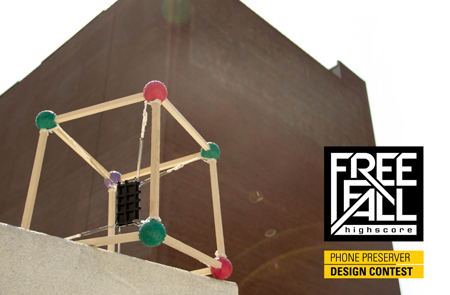

SUBMIT YOUR PRESERVER NOW »

DESIGN A PHONE PRESERVER, WIN AN IPOD TOUCH VIDEO TO THROW OFF A BUILDING
Freefall Highscore wants you to design amazing and stylish
ways of protecting falling phones to play the game. We
call them 'preservers': anything you can come up with to stop
a falling device from smashing to bits upon impact.
WE'LL INVITE YOU TO TEST YOUR PRESERVER IN A PUBLIC DROP EVENT
It could be a hamster ball and rubber bands, it could be crab-cage with motion
sensing airbags. It could be team of outfielders standing below with incredibly soft gloves.
THINK OF IT AS YOUR MIDDLE SCHOOL EGG-DROP WITH GREATER RISK AND GREATER REWARD
To encourage creativity at the premiere of the Freefall Highscore mobile game we're asking you to submit your preservers. Send us documentation of your finished preservers and we'll choose seven of them to compete in an epic drop during the The Creators Project event in Dumbo, New York this October.
WHAT'S IN IT FOR YOU
The winning preservers will each be given an iPod Touch Video to fit into their preserver. If the device survives the fall, you get to keep it! (well, you'll get to keep it even if it doesn't survive...)
In addition all of the players in the drop will be given VIP tickets to the The Creators Project event in NYC.
On top of that your inventive preserver will be prominently featured in the Freefall Highscore gallery exhibition in Dumbo.
JUDGING CRITERIA
We're looking for fun over function. Sure you should protect the device, but here's some things to think about that will get you extra style points
- Will it work? First and fore-most you have to convince us that your preserver strategy will stand a chance of saving your precious device.
- It's video art! So we encourage modding the camera on the phone to make the Free fall video more interesting and original.
- We encourage highly aesthetic and over the top designs. Go overboard!
- Likewise, we'd love to see amazingly minimal designs that are extremely elegant.
- Design with poetic or conceptual ideas behind them. What does this falling represent to you? Can you personify the device's feelings during the drop?
- Performative drops involving lots of people above or below to pull it off
- Anything with smarts, style, and creativity.
CONSTRAINTS
The sky is the limit with your designs but you have to keep the following constraints in mind:
- Freefall means free fall so it's gotta be graceful. There can be no external forces affecting the device or the drop won't qualify. This means no spinning, launching, or aggressively tethering the device. No parachutes.
- Eyes open.Your preserver cannot obstruct the camera from recording video. Augmenting it in some way is encouraged, but you can't black the video out by putting the device in a big padded box.
- Quick Lock and Load. You have 20 seconds between when you hit "drop" on the app to rig it and drop it before the drop timer times out. Your preserver has got to be quick loading.
- One Shot Drop You can test your devices at home if you find a way, but you get on chance to drop your preserver during the event so your system has got to be reliable!
- Fall location. Each contestant is going to be dropping from the same undisclosed location. Your preserver system has got to be portable and flexible to adapt to guerrilla-style drops.
- Fall height. We'll be dropping these preservers from way way up, so be prepared for fall heights upwards of 140 feet.
FINE PRINT
Submission are due by midnight September 30th.
We're accepting submissions from anywhere, but you'll need to be able to get the preserver to New York
by October 9th in advance of the event.
If you can't make it to the event we can't give you the VIP tickets,
but we'll throw your preserver on your behalf if you give us detailed instructions.
CONTACT US
Questions? Get in touch and we'll clear things up.
info@freefallhighscore.com